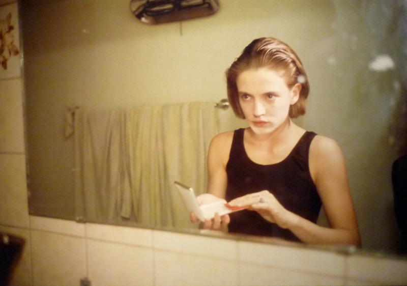

Nan GoldinNancy "Nan" Goldin (born September 12, 1953) is an American photographer. She lives and works in New York City, Berlin, and Paris. I first fell in love with Goldin's work sitting on a giant bean bag at the Walker Art Center watching The Ballad of Sexual Dependency, a slide show of Goldin's photographs set to a mystical rock and roll soundtrack. Her intensely intimate photographs of her friends in personal situation inspire me to shoot even when situations feels awkward or inappropriate. |
 | Michael WolfMichael Wolf (born 1954) is a German artist and photographer who lives and works in Hong Kong and Paris. I found Wolf's photography online one day and I spent the next few hours looking through every image on his site. His Architecture of Density series makes me consider my place on planet earth, yep, they are that good. I highly recommend checking out his site. |
Joel SternfeldJoel Sternfeld (born June 30, 1944) is a fine-art color photographer noted for his large-format documentary pictures of the United States and helping establish color photography as a respected artistic medium. I came across Sternfeld's photography through his book, Sweet Earth: Experimental Utopias in America, which I purchased because it featured a photo from the neighborhood that I grew up in. I love his scenic photos from across America. |